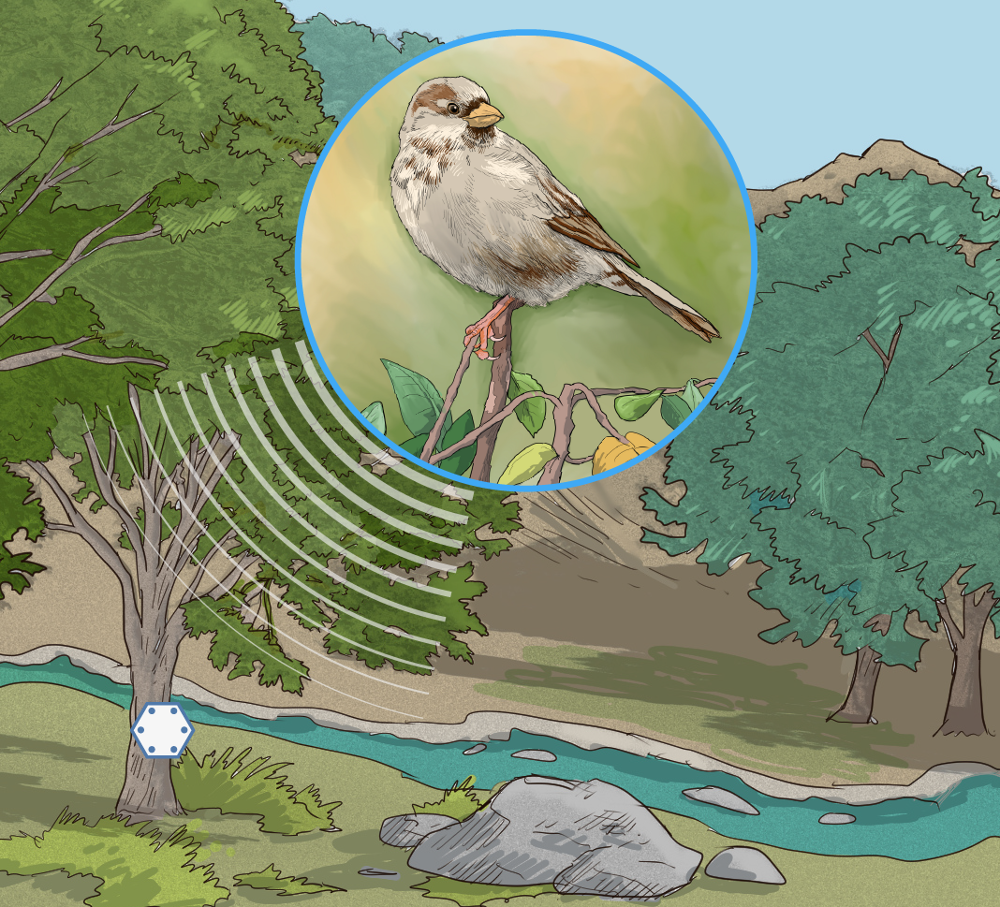

Spatial Acoustics

As vital ecosystems across the globe enter unchartered pressure from climate
change industrial land use, understanding the processes driving ecosystem viability has never been
more critical. Nuanced ecosystem understanding comes from well-collected and representative field
data. Advances in hardware and analytical methods have revolutionised ecological monitoring and
made it possible to easily uncover a wealth of information that hasn’t before been possible.
Sound ecology (bioacoustics and ecoacoustics) describes the school of research that uses information
transmitted through waves of pressure (sound) to infer properties about an# area's species,
biodiversity, and health.
Spatial acoustics takes this one step further By recording a soundwave from
multiple microphones simultaneously, we can use millisecond time differences to triangulate where a
sound has come from.
These delays can also be manipulated to amplify signals from a given direction through a beamforming.

Publications
MAARU and its applications are described in the following peer-reviewed, open-access papers.
Key paper: introducing MAARU
Spatial ecosystem monitoring with a Multichannel Acoustic Autonomous Recording Unit
(MAARU)
Heath, B. E., Suzuki, R., Le Penru, N. P., Skinner, J., Orme, C. D. L., Ewers, R. M.,
Sethi, S. S., & Picinali, L. (2024). Methods in Ecology and Evolution, 15, 1568–1579.
This paper introduces MAARU: a low-cost, open-source, six-channel recorder built entirely from
off-the-shelf components that can be integrated into a solar-powered, networked system. It sets out
the hardware and software and reports lab and field tests from the UK and Brazil, showing that MAARU
can localise pure tones and bird calls to within ±10°, and that beamforming can improve BirdNET
species-identification confidence.
Read the paper (open access)
Testing MAARU with virtual acoustics
Towards using virtual acoustics for evaluating spatial ecoacoustic monitoring
technologies
Le Penru, N. P., Heath, B. E., Dunning, J., Picinali, L., Ewers, R. M., & Sethi, S. S. (2025).
Methods in Ecology and Evolution, 16, 108–125.
This paper develops an ambisonic virtual sound environment — a loudspeaker array that recreates real
natural soundscapes in the lab — as a controlled, repeatable way to test spatial monitoring
technologies. It uses MAARU to explore how device orientation affects a suite of ecoacoustic metrics,
including the BirdNET and HARKBird software tools, and offers guidelines for building and using such
test platforms.
Read the paper (open access)
Spatial acoustics is potentially able to revolutionise the way that soundscapes are recorded, however
it’s uptake in the field has been limited due to the equipment being expensive, inaccessible,
requiring specific expertise, or only being suitable for short term deployments.
However, we believe
the MAARU platform is an answer to some of these problems
Find out how to build MAARU here!